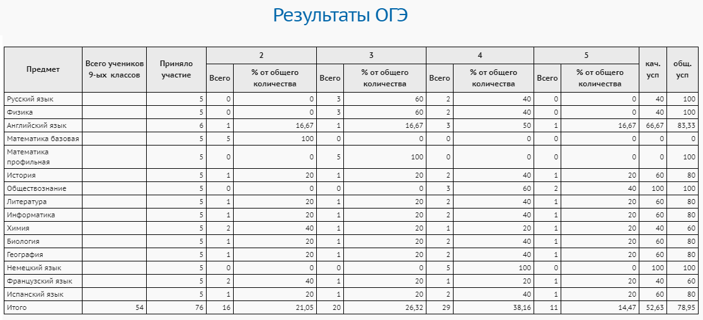

Данный отчёт выводит результаты ОГЭ в вашей школе по каждому предмету.
В отчёт попадают данные только по 9-м классам.
Это количественный отчёт, без фамилий учащихся.
Откуда берутся данные для этого отчёта?
Предварительно сотрудник Управления образования должен импортировать в систему Excel-файл с персональными результатами ОГЭ, который получен из РЦОИ (региональный центр обработки информации).
Где можно увидеть персональные результаты ОГЭ (с фамилиями учащихся)?
Персональные результаты ОГЭ доступны сотрудникам школы на экране "Результаты сдачи ГИА".
Пример отчёта:

Замечание. Последние две графы вычисляются следующим образом:
·
качество успеваемости - это процент учащихся, получивших отметку 4 или 5;
·
общая успеваемость - это процент учащихся, получивших отметку выше 2.